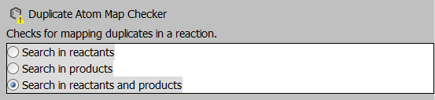

| ← Implementing a new Structure Checker | ↑ Structure Checker Developer's Guide | Creating Fixers for the new Checker → |
To support checker configuration from GUI, an editor is required. We are going to create a simple editor with three radio buttons to set the preferred behavior. The options will be "Reactant Side", "Product Side", and "Both Sides" respectively. The class is placed to the same package as the checker class is.
Extend the DefaultCheckerEditor class, create a JPanel with some
JRadioButton instances, and bind the radio buttons to the Checker instance.
Overriding getCustomComponent method will add the JPanel to the editor,
while getEditorComponent sets up the editor to represent the passed Checker’s state.
Changing the radio buttons will alter the state of the Checker.
Download the example and find "DuplicateAtomMapCheckerEditor.java".
public class DuplicateAtomMapCheckerEditor extends DefaultCheckerEditor {
/** the main component */
private JPanel mainPanel = null;
/** radio button for reactant only */
private JRadioButton reactantRadio = null;
/** radio button for product only */
private JRadioButton productRadio = null;
/** radio button for both */
private JRadioButton bothRadio = null;
/** the checker instance being edited */
private DuplicateAtomMapChecker checker = null;
/**
* Constructs an editor component for duplicate atom map checker.
*/
public DuplicateAtomMapCheckerEditor() {
ButtonGroup group = new ButtonGroup();
group.add(getReactantRadio());
group.add(getProductRadio());
group.add(getBothRadio());
}
@Override
protected Component getCustomComponent() {
if (mainPanel == null) {
// create a panel and set up a layout
mainPanel = new JPanel();
mainPanel.setLayout(new BoxLayout(mainPanel, BoxLayout.Y_AXIS));
// add control components
mainPanel.add(getReactantRadio());
mainPanel.add(getProductRadio());
mainPanel.add(getBothRadio());
// set up some design
mainPanel.setBackground(Color.WHITE);
mainPanel.setBorder(BorderFactory.createLineBorder(Color.BLACK));
}
return mainPanel;
}
@Override
public JComponent getEditorComponent(StructureChecker checker) {
if (checker instanceof DuplicateAtomMapChecker) {
this.checker = (DuplicateAtomMapChecker) checker;
switch (this.checker.getReactionSide()) {
case REACTANT:
getReactantRadio().setSelected(true);
break;
case PRODUCT:
getProductRadio().setSelected(true);
break;
case BOTH:
default:
getBothRadio().setSelected(true);
break;
}
} else {
this.checker = null;
}
return super.getEditorComponent(this.checker);
}
/**
* Initializes and returns the radio button for reactant only selection.
*
* @return the radio button for reactant only selection
*/
private JRadioButton getReactantRadio() {
if (reactantRadio == null) {
reactantRadio = new JRadioButton("Search in reactants");
reactantRadio.addActionListener(new ActionListener() {
@Override
public void actionPerformed(ActionEvent e) {
if (reactantRadio.isSelected()) {
checker.setReactionSide(ReactionSide.REACTANT);
}
}
});
}
return reactantRadio;
}
/**
* Initializes and returns the radio button for product only selection.
*
* @return the radio button for product only selection
*/
private JRadioButton getProductRadio() {
if (productRadio == null) {
productRadio = new JRadioButton("Search in products");
productRadio.addActionListener(new ActionListener() {
@Override
public void actionPerformed(ActionEvent e) {
if (productRadio.isSelected()) {
checker.setReactionSide(ReactionSide.PRODUCT);
}
}
});
}
return productRadio;
}
/**
* Initializes and returns the radio button for both selection.
*
* @return the radio button for both selection
*/
private JRadioButton getBothRadio() {
if (bothRadio == null) {
bothRadio = new JRadioButton("Search in reactants and products");
bothRadio.addActionListener(new ActionListener() {
@Override
public void actionPerformed(ActionEvent e) {
if (bothRadio.isSelected()) {
checker.setReactionSide(ReactionSide.BOTH);
}
}
});
}
return bothRadio;
}
}
The new editor can be attached to the checker by adding a new option to the @CheckerInfo
annotation in DuplicateAtomMapChecker class.
@CheckerInfo(
name = "Duplicate Atom Map Checker",
description = "Checks for mapping duplicates in a reaction.",
editorClassName = "custom.checkers.DuplicateAtomMapCheckerEditor",
noErrorMessage = "No duplicate mappings found",
moreErrorMessage = "duplicate mappings found",
actionStringToken = "duplicateatommap")
Create a new JAR file, and export both DuplicateAtomMapChecker and
DuplicateAtomMapCheckerEditor classes.
Replace the previously generated JAR file with this one. Overwrite the duplicateatommapchecker.jar
in home/MyCustomCheckers folder.
The new editor is available and works in all Structure Checker related ChemAxon products.

| ← Implementing a new Structure Checker | ↑ Structure Checker Developer's Guide | Creating Fixers for the new Checker → |
Structure Checker Developer's Guide
List of available checkers
Structure Checker GUI
structurecheck Command Line Application
Structure Checker in MarvinSketch